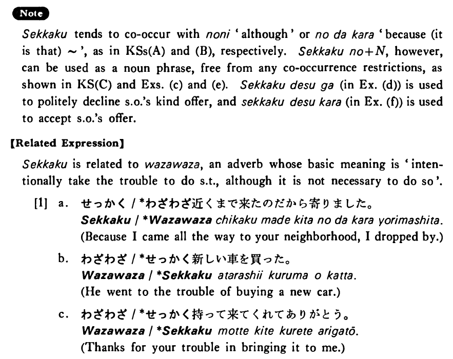

せっかく (B. 392)
- (ksa).
- せっかく会いに行ったのに友達はいなかった・いませんでした。
- I took the trouble to go see my friend, but he wasn't at home.
- (ksb).
- せっかくいい大学に入ったのだからよく勉強するつもりだ・です。
- I entered a good college with great effort, so I intend to study hard.
- (ksc).
- せっかくの日曜日なのに働いた・働きました。
- Although Sunday is precious (to me), I worked (all day long).
- (a).
- せっかくアメリカまで行ったのにニューヨークに行けなくて残念だった。
- I went as far as America at great expense, but, to my regret, I couldn't make it to New York.
- (b).
- せっかく日本語を三年間も勉強したのだから、是非一度日本へ行ってみたいと思います。
- Because I studied Japanese for (as many as) three years, I would love to go to Japan once.
- (c).
- せっかくの旅行が病気で駄目になりました。
- My long awaited trip had to be canceled because of my illness.
- (d).
- せっかくですが今日は忙しくて行けません。
- I appreciate your most kind offer, but I'm too busy to go there today.
- (e).
- せっかくのチャンスだからデートしたらどうですか。
- It's a good chance, so why don't you date her?
- (f).
- せっかくですから遠慮なくいただきます。
- Since you took the trouble to bring it to me, I’ll take it without hesitation.
